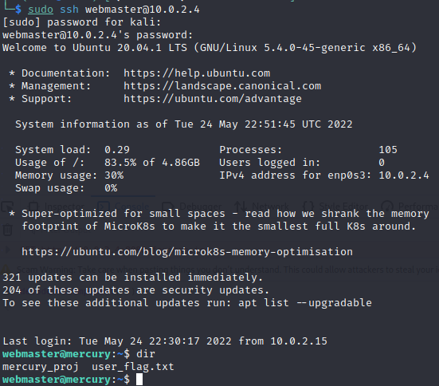

Home
VULNHUB - MERCURY
More to come...
Scanning and Enumeration
Starting with an NMAP scan we have...$ nmap -sC -A 10.0.2.4
Starting Nmap 7.92 ( https://nmap.org ) at 2022-05-24 07:45 EDT
Nmap scan report for 10.0.2.4
Host is up (0.0011s latency).
Not shown: 998 closed tcp ports (conn-refused)
PORT STATE SERVICE VERSION
22/tcp open ssh OpenSSH 8.2p1 Ubuntu 4ubuntu0.1 (Ubuntu Linux; protocol 2.0)
| ssh-hostkey:
| 3072 c8:24:ea:2a:2b:f1:3c:fa:16:94:65:bd:c7:9b:6c:29 (RSA)
| 256 e8:08:a1:8e:7d:5a:bc:5c:66:16:48:24:57:0d:fa:b8 (ECDSA)
|_ 256 2f:18:7e:10:54:f7:b9:17:a2:11:1d:8f:b3:30:a5:2a (ED25519)
8080/tcp open http-proxy WSGIServer/0.2 CPython/3.8.2
| fingerprint-strings:
| FourOhFourRequest:
| HTTP/1.1 404 Not Found
| Date: Tue, 24 May 2022 11:45:46 GMT
| Server: WSGIServer/0.2 CPython/3.8.2
........
Service Info: OS: Linux; CPE: cpe:/o:linux:linux_kernel
Service detection performed. Please report any incorrect results at https://nmap.org/submit/ .
Nmap done: 1 IP address (1 host up) scanned in 94.50 secondsWeb Server - TCP 8080
Nothing of use was found on the home page. Interacting with the website, it appears we have an Information Disclosure vulnerability. There seems to be no implementation of generic messages for error messages such as404 or 500. Putting any invalid URL path, we get...
Instead of a standard 404 page, the server's default 404 page is returned. It also contains information about the URL paths available to us. Let's check mercuryfacts...
In Load a fact we have...
The integer 1 in the url is actually a user controllable value that control which mercury fact is returned by the site. Changing it to a string we get...
 We have an SQL query error. Looking through the same error page, we get the exact sql statement used by the application...
This tells us that the application makes a direct sql query with its database. In the query it concatenates the integer value passed in the URL with the statement. This is a possible
SQL injection vulnerability. Let's confirm if it is vulnerable...
We have an SQL query error. Looking through the same error page, we get the exact sql statement used by the application...
This tells us that the application makes a direct sql query with its database. In the query it concatenates the integer value passed in the URL with the statement. This is a possible
SQL injection vulnerability. Let's confirm if it is vulnerable...
 The application is indeed vulnerable to SQL injection. Using the
The application is indeed vulnerable to SQL injection. Using the UNION attack method we are able to return an additional column. Since a single NULL is used
this means that whatever SQL injection statement we construct, we must select a single column for our attack to be successfull. Let's construct an attack to extract the usernames in the
users table...
We have a user called webmaster. Let's get the user's password from the database...
We have the password for webmaster. Let's login to the SSH service...

We have USER access and can view the USER flag.
Privilege Escalation
Looking through the file-system there is a file callednotes.txt in /home/webmaster/mercury_proj that contains the following information...
After inspecting it, the information there seems to be base64 encoded, let's decode it...
The encoded information are the passwords for both the webmaster and linuxmaster users. Let's login as linuxmaster...
Linuxmasster has sudo permissions to run the check_syslog.sh as root with the SETENV option set. This option enables linuxmaster to preserve
and make use of his current environment variables each time sudo is used to run that file. This can typically be done using the -E flag or the --preserve-env flag.
We have the contents of the check_syslog file to be...
This file is used to print out the last ten lines of the syslog using the tail binary. Since we can control our environment variables when we use sudo to run check_syslog.sh,
we should be able to run a fake tail binary by controlling the path of where it is called using the PATH environment variable. First let's create a fake tail binary and give it
executive permission...
Our fake tail binary contains path to the bash binary. This means that if it is run as root, we should get a shell owned by the root user. To control the path of where tail is
found make the following modifications...
What we've done is we added the path of where our fake tail is found, in this case our home directory to the PATH environment variable. This variable controls the location of where the shell looks
when a command is called. And since it checks from left to right, we are able to overide the location of where the original tail binary is with the fake one.
Now let's execute check_syslog with sudo while preserving our PATH environment variable...
We have successfully escalated our privilege to root, and can view the root flag 😁.
Thank you for reading my writeup 😀 | Home